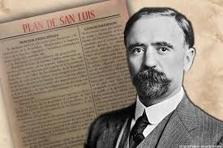

Plan de San Luis
Promulgado por Francisco I. Madero el 5 de octubre de 1910, llamó al pueblo a levantarse en armas para derrocar a Porfirio Díaz, exigiendo "sufragio efectivo y no reelección".
Desigualdad social y económica. Concentración de tierras (1% de propietarios controlaba casi todo).Autoritarismo político.
Periodo de más de 30 años en el que Porfirio Díaz gobernó con modernización económica, pero con marcada desigualdad social, represión y falta de democracia.
LEER MAS
Figura central que impulsó la Revolución con el Plan de San Luis, defendiendo la democracia bajo el lema “Sufragio efectivo, no reelección”.
LEER MAS
Líder campesino del sur, creador del Plan de Ayala, y símbolo de la lucha por la tierra con su lema “Tierra y Libertad”.
LEER MASJefe del Ejército del Norte, carismático y con habilidades militares destacadas; apoyó causas populares y realizó campañas decisivas.
LEER MASPlanes de la Revolución Mexicana debe destacar que estos documentos fueron los manifiestos políticos y militares clave que definieron las diferentes etapas, facciones e ideales del conflicto.
Promulgado por Francisco I. Madero el 5 de octubre de 1910, llamó al pueblo a levantarse en armas para derrocar a Porfirio Díaz, exigiendo "sufragio efectivo y no reelección".
Proclamado por Emiliano Zapata en noviembre de 1911, desconocía el gobierno de Madero al considerar que no cumplía con los ideales de justicia social, especialmente en lo referente a la restitución de tierras para los campesinos.
Lanzado por Venustiano Carranza en marzo de 1913, desconocía el gobierno de Victoriano Huerta tras el asesinato de Madero y se proponía reorganizar las fuerzas del país para restaurar el orden constitucional.
Emitido por Pascual Orozco en 1912, también desconoció la autoridad de Madero debido a la lentitud de las reformas sociales prometidas, lo que evidenció las divisiones internas del movimiento revolucionario.
Firmado por Felix Diaz y Victoriano Huerta para derrocar al gobierno de Madero, lo que desemboco en su asesinato.
Gracias a la Revolucion se logro terminar con la didactura y se establecio la Constitucion de 1917, que otorgo nuevos derechos al pueblo mexicano.
Durante el Porfiriato:Durante el Porfiriato, el país tuvo un crecimiento económico importante. Sin embargo, la riqueza quedó repartida en unas cuantas manos nacionales y en otras pocas extranjeras.
El pueblo no podía elegir El pueblo no podía elegir a ningún representante dentro de los poderes estatales ni federales. Estos eran impuestos por Porfirio Díaz, quien, pese a estar en contra de la reelección, permaneció en el poder más de 30 años.
Causa de pricipalPorfirio Díaz renunció a la presidencia de México el 25 de mayo de 1911, presionado por la Revolución Mexicana. La renuncia se firmó tras los Tratados de Ciudad Juárez del 21 de mayo, que pusieron fin a la primera fase de la revuelta, y culminaron con su exilio a Francia el 31 de mayo.
Promulgación de una nueva constitución en 1917La Constitución de 1917 fue promulgada en México el 5 de febrero de 1917 por el presidente Venustiano Carranza, en el Teatro de la República de Querétaro. Fue elaborada por un Congreso Constituyente y surgió como resultado de la Revolución Mexicana, plasmando sus demandas sociales y políticas en la nueva Carta Magna que entró en vigor el 1 de mayo de 1917.
Los errores politicos y la creciente oposicion popular que desataron la crisis final.
tras la victoria en la Revolución de Tuxtepec. Comienza el largo periodo conocido como el Porfiriato (1876-1911), un régimen autoritario caracterizado por el desarrollo económico, pero también por la opresión y las desigualdades sociales.
Trabajadores de la mina de Cananea, en Sonora, exigen mejores condiciones laborales, lo que se convierte en un importante antecedente del descontento popular contra el régimen de Díaz.
Los trabajadores de las fábricas textiles protestan contra las malas condiciones laborales. La represión por parte del gobierno es brutal, lo que agudiza la oposición al Porfiriato.
Francisco I. Madero, líder opositor, lanza el Plan de San Luis, llamando a la rebelión armada contra Porfirio Díaz, al considerar que las elecciones presidenciales de 1910 fueron fraudulentas. Madero denuncia la falta de democracia.
Comienza el levantamiento armado, conocido como la Revolución Mexicana. Francisco I. Madero convoca a la lucha en su famoso llamado a la rebelión.
Personajes , Eventos y Documnetos de la Revolucion Mexicana
Se conoce como Decena Trágica al golpe de Estado militar que tuvo lugar del 9 al 19 de febrero[1] de 1913 para derrocar a Francisco I. Madero de la presidencia de México. La sublevación se inició en la Ciudad de México, donde un grupo de disidentes comandado por el general Manuel Mondragón se levantó en armas y puso en libertad a los generales Bernardo Reyes y Félix Díaz, quienes estaban presos. Posteriormente, asaltaron algunas dependencias del gobierno y decretaron el estado de sitio.
9 de febrero de 1913-23 de febrero de 1913(14 días)
La dictadura de Victoriano Huerta (1913-1914) fue un régimen militar impuesto tras el golpe de Estado conocido como la Decena Trágica, en el que se derrocó y asesinó al presidente Francisco I. Madero. Huerta consolidó su poder militar disolviendo el Congreso, lo que generó la oposición de diversos grupos, incluido el Ejército Constitucionalista liderado por Venustiano Carranza. La falta de reconocimiento internacional, especialmente de Estados Unidos, y el avance de las fuerzas revolucionarias llevaron a su renuncia el 15 de julio de 1914
Huerta traicionó al presidente Madero durante la Decena Trágica (9-18 de febrero de 1913).
El Ejército Constitucionalista fue una fuerza militar creada por Venustiano Carranza en 1913 durante la Revolución Mexicana para oponerse al gobierno de Victoriano Huerta. Su objetivo principal era restablecer el orden constitucional, lo que se formalizó en el Plan de Guadalupe.
El ejército estaba compuesto por civiles, como artesanos y campesinos, y fue fundamental para derrotar a Huerta y lograr la promulgación de la Constitución de 1917.